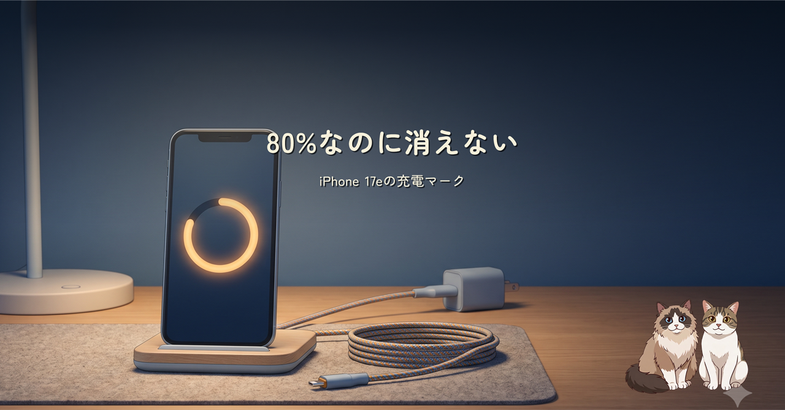
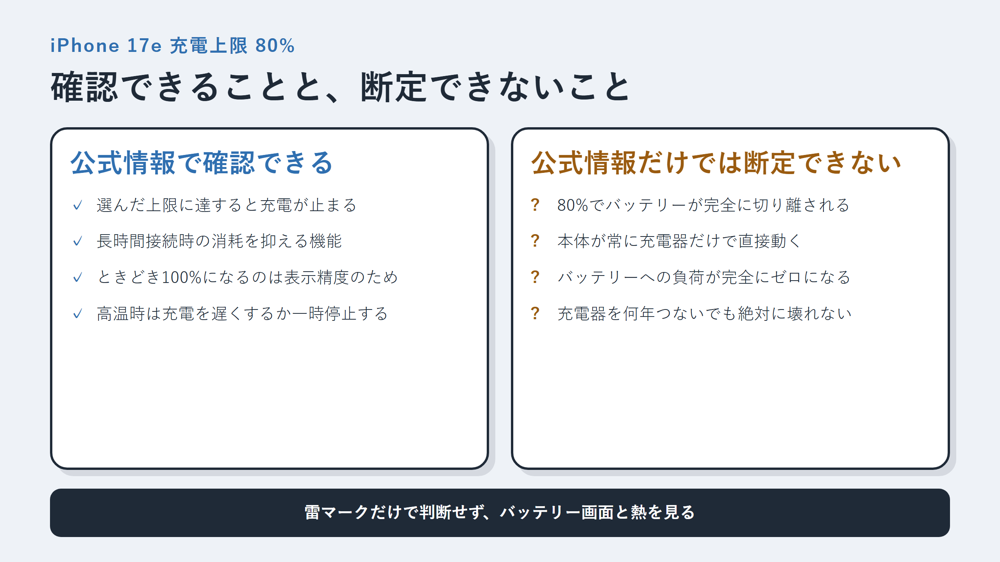
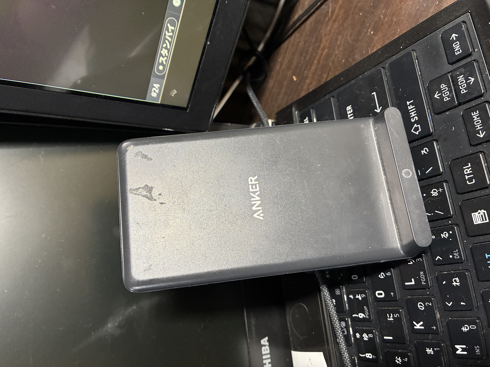

iPhone 17eの充電上限を80%にして、Anker PowerWave 10につないだまま使っています。80%で数字は止まっているのに充電マークは消えない。その理由と、完全なパススルー給電と言い切れない点を公式情報から整理しました。
Apple公式で確認できるのは、設定した上限に達すると充電が停止することです。一方、80%到達後にバッテリーが完全に切り離され、負荷がゼロになるという説明までは確認できませんでした。

PowerWave 10の安全機能も確認しつつ、雷マークだけで判断せず、バッテリー画面と熱をときどき見る使い方に落ち着きました。
このPowerWave 10 Standは、たしか5年くらい前に買ったものです。今も現役で、デスクではiPhoneをパッと取り、戻すときは置くだけ。充電ケーブルがiPhoneにつながったままの煩わしさがなく、かなり快適です。

使っているPowerWave 10 Standはこちらです。
※ 上記はAmazonアソシエイトのリンクです。
Amazonのアソシエイトとして、ishizakahiroshiは適格販売により収入を得ています。